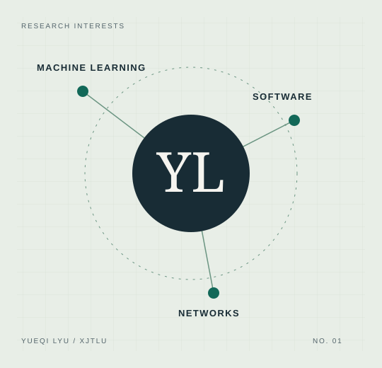

Phishing detection
Studying how data preparation, features and evaluation affect email classification.
Undergraduate · Data Science & Big Data
Exploring how data, learning algorithms and software can help us understand and solve real problems.
I study at Xi'an Jiaotong-Liverpool University, with interests in AI, machine learning and reproducible experiments.

About me
My interests sit at the intersection of data science and software development. I enjoy turning an idea into an experiment, checking the evidence and explaining the result clearly.
I have worked on phishing detection research and am currently developing a news aggregator. Through CSI205TC, I am also learning how applications communicate across networks and how to inspect that communication.
Selected work
Studying how data preparation, features and evaluation affect email classification.
Developing software to collect and organise news for easier exploration.
Connecting a personal website with DNS, transport protocols and secure web access.
Learning notebook / Week 6
A domain name, a network connection and an encrypted conversation. My notes connect the course's network layers with HTTPS and network measurement.
Read the network notes ↗